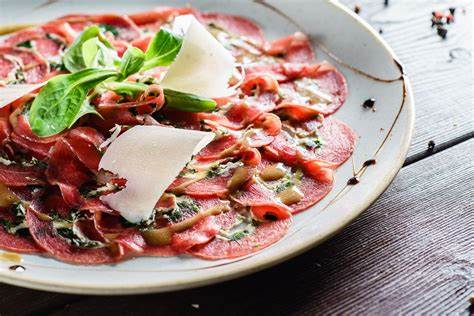

Gehaktbrood
Voorgerecht
Nagerecht
Carpaccio Recept
Carpaccio doet het altijd goed bij iedereen, een echte klassieker die iedereen lekker vindt.
Ingrediënten
200g ossenhaas
30g Parmezaanse kaas, geschaafd
Handvol rucola
1 eetlepel kappertjes
1 eetlepel olijfolie
Zout en peper naar smaak
Optioneel: balsamico glazuur
Optioneel: pijnboompitten
Bereidingswijze
Snijd de ossenhaas heel dun met een scherp mes en verdeel het over een bord.
Bestrooi de ossenhaas met zout en peper naar smaak.
Leg de geschaafde Parmezaanse kaas over het vlees.
Verdeel de rucola en kappertjes over het vlees.
Besprenkel met olijfolie en eventueel balsamico glazuur.
